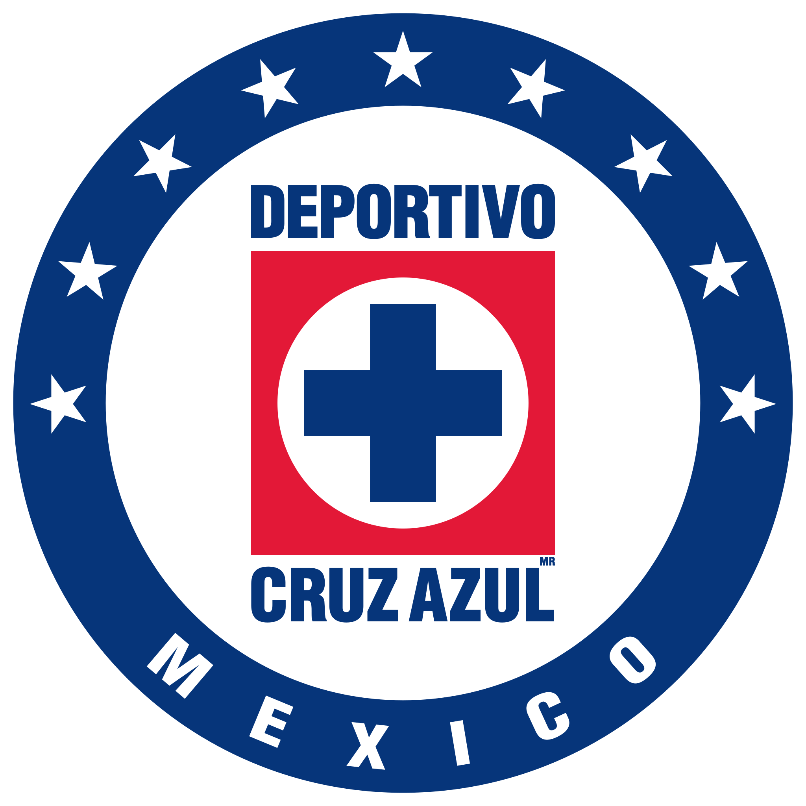

Cruz Azul
En este espacio virtual, te invitamos a sumergirte en el apasionante mundo del Cruz Azul, uno de los clubes de fútbol más destacados de México. Aquí encontrarás toda la información que necesitas sobre el equipo, sus jugadores, su historia y sus logros.
Ver más